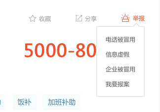
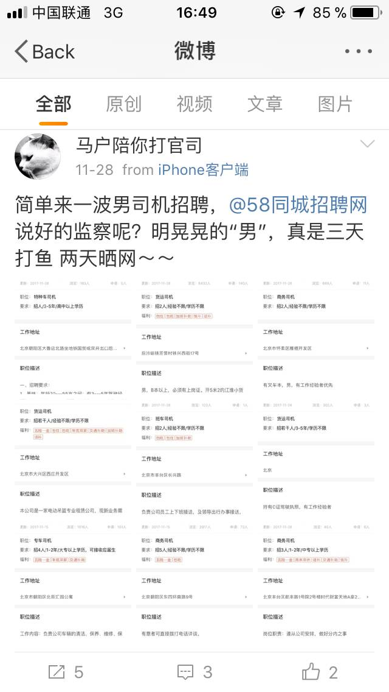

就业性别歧视监察大队成立于2014年，在这短短的三年时间里，志愿者们已经默默地寄出了1000多封举报信。收到举报信的人社局和信息发布网站从最初的推诿和应付到现在的积极协调与整改，这个过程是漫长且充满插曲的。起初，由于大多数人社局并没有见过类似举报，面对那些凶猛的质疑，志愿者们尝试与Ta们建立沟通的过程可谓是“斗智斗勇”的。但渐渐的，我们发现，一些地区的人社局已经变得更加清楚职责，各大招聘网站也开始愿意沟通了，于是这些细小的改变让我们感到了安慰。
12月11号，刚刚对58同城进行了举报的大队志愿者楼楼迎来了一次让人充满期待的三方约谈，是海淀区劳动监察大队主动要约哦！出席约谈的人有举报者楼楼，女权之声工作人员少年壳，58同城网站方的一位高级经理和一位HR，还有海淀区劳动监察大队的工作人员郝苗苗。
对谈过程中，58网站代表非常诚恳，楼楼和少年壳都说感受到了Ta们想要作出整改的诚意。而对于网站代表提出的一些现有的困难和整改中遇到的问题，两位志愿者也都当场提出了一些建议和期待。约谈非常高效，58网站代表作出的承诺如下：
1. 立即删除此次楼楼举报的招聘信息；
2. 将“就业性别歧视”加入到“一键举报”分栏中；
3. 将“就业性别歧视”加入到“反欺诈联盟”工作中（“反欺诈联盟”网址：http://fanqizha.58.com/?PGTID=0d100000-0000-3a84-2395-456fb48aebab&ClickID=3，亦可在58主页最下端找到网页链接。）；
4. 在下阶段平台系统升级时把“性别歧视”加入考量以便加强审核；
此外，楼楼还提出，希望公司可以在发布就业信息的页面投放反就业性别歧视的广告，以此方式提高求职者对就业性别歧视和保护合法权益的意识。
三方交流非常顺畅，交流进展使人满意。
其实，在今年的5月，举报人马户也曾与58同城和朝阳区劳动监察大队进行过一次同样顺畅的三方约谈（事件报道点击原文链接），那次约谈中，马户也曾提出过将“就业性别歧视”纳入“一键举报”功能的建议。但据小编查阅，58同城至今尚未将其添加至该功能。

另外，在那次5月份的约谈中，双方也曾达成过“提升筛查技术水平”的共识。但几个月过去了，明晃晃的“男”依然出现在58网页中，而筛选后被屏蔽的“限男性”则显示成了“限*性”，这让人质疑之前说到的“技术升级”是否真的奏效。

（11月28日，微博@马户陪你打官司 在58同城中随手搜出的“限男”广告）
因此在此次约谈中提及审核技术时，58同城坦言道，Ta们曾尝试过设置了40-50个屏蔽关键词，但收到的效果却不够合理。举例说，“若把包含‘男’字的信息都设置为屏蔽，那么许多不涉及性别歧视的短语也将无法显示，如‘男女不限”。而至于“限男性”显示为“限*性”的现象，Ta们解释说这是单字屏蔽的结果，这项尝试同样也是不够令人满意的，因此Ta们取消了这些尝试。
对此，楼楼和少年壳提出了“借助人工智能技术”的建议。“在人工智能训练下的机器达到的判断正确率可接近正常人的水平，这在技术上是可行的，加之机器学习和调整算法的时间也变得更加可控，因此人工智能的使用在整体上是一个趋势”，楼楼解释道。
听到“人工智能”这提议，小编感觉可好了！因为反对“就业性别歧视”并不完全等于反对“一切带有性别要求的招聘”，对于招聘中并非出于歧视女性能力并且具备合理理由的性别要求，我们是尊重的（诸如“为男性病人招聘男护工”）。但貌似，目前的筛查技术还只停留在“一刀切”式的屏蔽阶段，想要尊重更多不同的合理需求，还是需要更智能的筛查系统！正如海淀区劳动监察大队郝女士所说，“58同城在同类网站中规模较大，起着风向标的作用”，希望Ta可以在招聘网站中首开先河，尽快启用大势所趋的人工智能技术啊！
总体说来，与5月份的约谈相比，很明显，58同城对招聘信息中的性别歧视问题已经有了更深刻的认识。那么，这次与58网站方“重量级代表”的当面约谈后，Ta们能否对承诺事项做出有效整的改呢？暂且让我们充满期待的拭目等待吧˜
期待58同城可以切实履行约谈承诺，加大对歧视性信息的监管力度，从而保护女性的平等就业权，在就业性别歧视问题上承担起更多社会责任，呦˜